DBX USR MACHINES
FOR THE ELEKTRON MACHINEDRUM
About
Custom USR machines for the Machinedrum running jmamma's MDX firmware X.20, written in DSP56303 assembler to the Machine Dump Standard 1.1. Both machines run on MKI and MKII, on all 16 tracks, and are cycle-certified. The sound ideas come from my DIY groovebox: my own firmware, written from scratch, running on the MicroDexed-touch hardware. The machines are rebuilt for the Machinedrum in principle, not copied. Made for EBM, industrial and dark techno: raw, pressed, not polished.
I use AI, and I still try to make something that is not the 15th smoothed-out version where everything just becomes the same. I want individual results anyway. I try to build what I often miss: machines with character. Clean on the surface, raw in the sound. Und wenn dir das nicht passt, da oben ist der X-Buddne.
Field notes - against the slop ;)
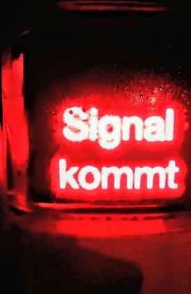
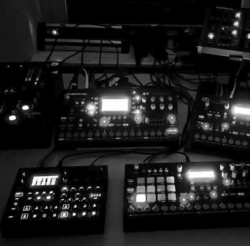
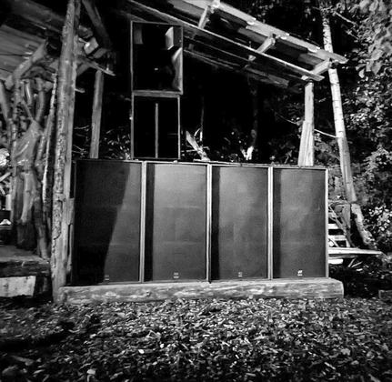
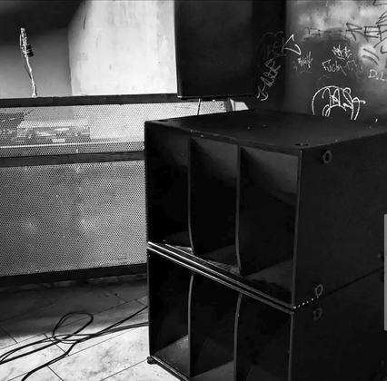
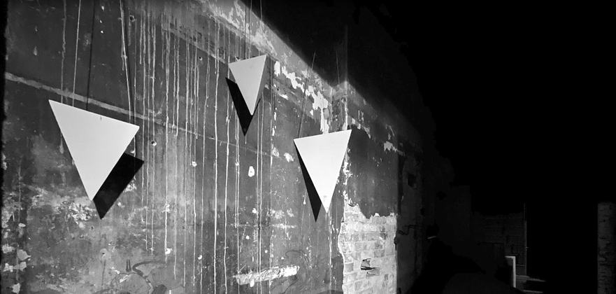
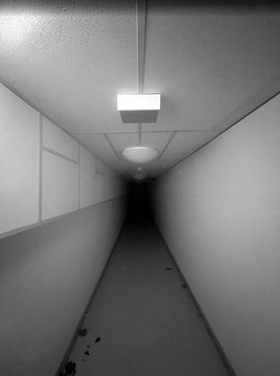
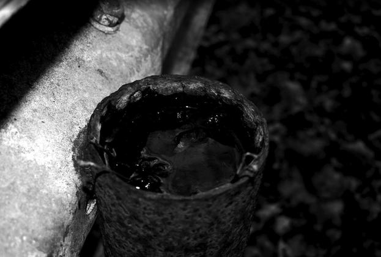
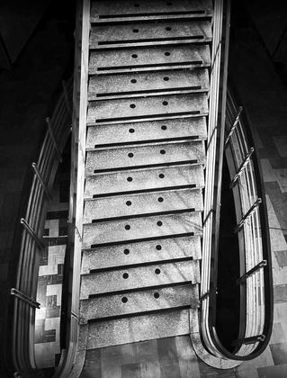
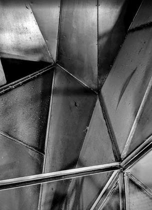
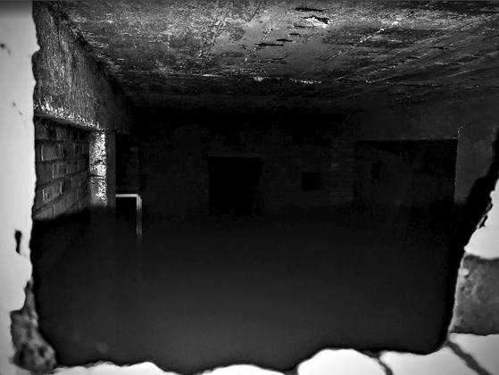
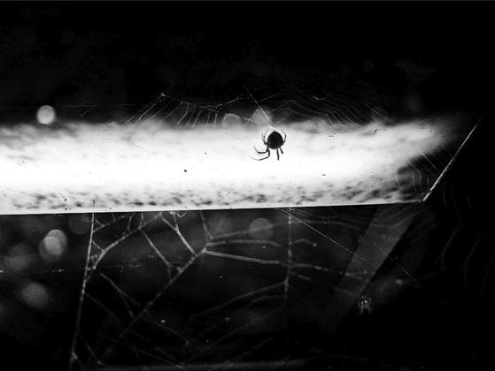
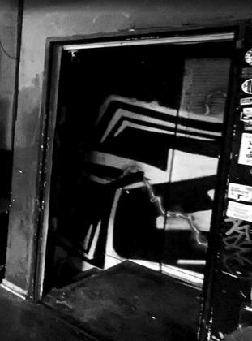
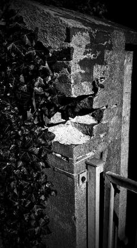
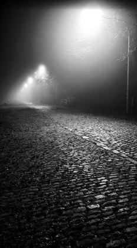
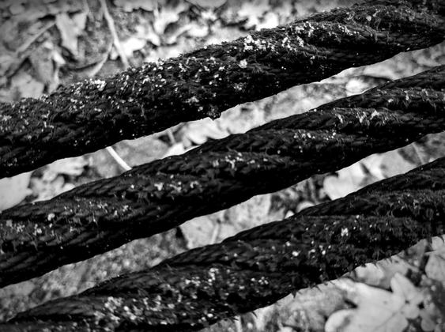
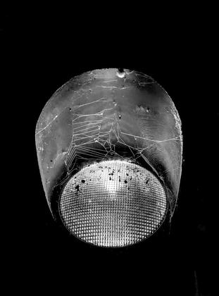
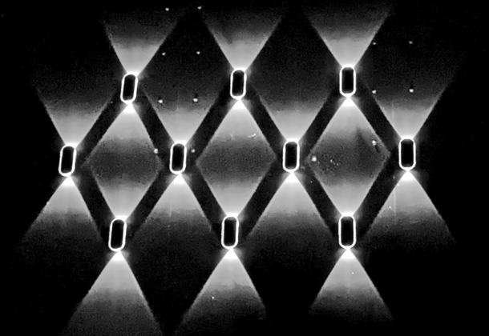
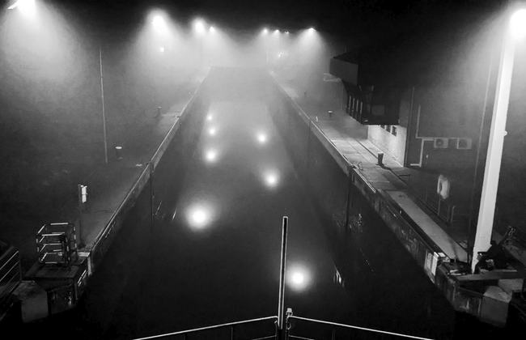
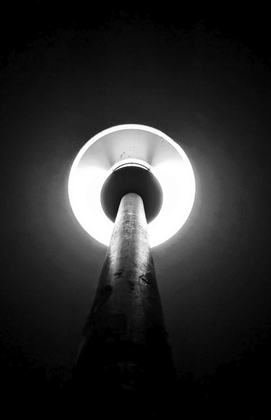
My own photos (mostly Nikon D3400 and Panasonic G81). Click to enlarge, then browse with the arrow keys or by swiping.
Back to business
DBX-K2
Resonator kick · v0.9 · MKII 2,508 / MKI 2,850 cycles · 1.8 KBA resonator kick in the spirit of the Korg Volca Kick. Each trigger strikes a tuned resonator whose pitch sweeps down from a higher start, then rings out like a drum skin – or, with HOLD, stays at full level and cuts off. A short click adds the attack, saturation and a lowpass shape the result. The first transient is deliberately hard: the resonator starts at full swing.
Heads-up: resonance & volumeResonator: it hits hard and can get very loud. Mind your speakers and the track level.
| KNOB | DEFAULT | FUNCTION |
|---|---|---|
| PTCH | 33 | Base pitch of the resonator, 38–160 Hz |
| BEND | 75 | Depth of the start sweep, 0–5 octaves above PTCH |
| BTIM | 20 | Speed of the sweep, 3–300 ms |
| DCAY | 40 | Ring-out time, 40 ms to 3 s |
| PULS | 100 | Attack pulse; heard directly and pushes the resonator for extra punch |
| HOLD | 50 | Time at full level before DCAY takes over, 0–245 ms. 0 = classic decay |
| DRIV | 70 | Saturation, from gentle to heavily driven |
| TONE | 105 | Lowpass, roughly 200 Hz to 18 kHz |
Notes
- A little HOLD with a short DCAY: fat, boxy kick that cuts off cleanly. Add DRIV for brutal.
- High BEND with short BTIM: zappy electro kicks.
- Low PTCH, BEND 0, long DCAY: deep booming sub.
DBX-DR
Dark drone · v0.5 · MKII 2,610 / MKI 3,017 cycles · 2.5 KBA single-voice drone. Three detuned, deliberately unsmoothed saws and a square sub run through a saturation stage into a 4-pole ladder lowpass. The heart is a feedback loop in front of the filter: the saturated signal runs through a short delay and back, phase-inverted, with gain up to 1.5. Above 1 it starts to oscillate on its own and fights the drone – from slow growl to metallic whistle. WARP lets two oscillators and the loop's delay wander slowly and irregularly, so it keeps changing without any periodic wobble.
Heads-up: resonance & volumeResonance plus feedback, with a heavy low end. Watch your speakers, use a low-cut (high-pass filter), and bring the knobs up gradually – it can get very loud.
| KNOB | DEFAULT | FUNCTION |
|---|---|---|
| PTCH | 17 | Pitch of the root oscillator, follows notes. Sub and OSC3 sit one octave below |
| DTUN | 40 | Detune of OSC2 (0–100 cent) and random drift of all oscillators |
| DRIV | 50 | Drive into the saturation, 1–8×, warm to scratchy |
| WARP | 40 | Slow irregular wandering of OSC2/OSC3 (±3 semitones) and the feedback delay. 0 = still |
| CUT | 45 | Ladder lowpass, 30 Hz to ~5 kHz |
| RES | 50 | Resonance, up to just before self-oscillation |
| FDBK | 70 | Feedback amount 0–1.5; also pulls the oscillators back so the loop can take over |
| FTIM | 64 | Feedback delay 34 → 1 ms: pitch of the loop (≈15 Hz growl to ≈500 Hz whistle) |
Notes
- Trigger once, then play the knobs. The drone fades in (~12 ms) and holds; further trigs or notes only change the pitch, no restart.
- Stop it with track mute or track level – the Machinedrum has no note-off.
- No envelope of its own: use the envelope on the LFO page.
- Combine with the track filter: FLTW down, FLTF up, high FLTQ – from strange high tones to the deepest rumble.
- Output peaks near −9 dBFS on purpose (headroom for resonant track filters). Bring FDBK, RES and DRIV up gradually – it can get loud.
Install
See jmamma's MDX documents for the general procedure. In short: on the Machinedrum choose a USR slot in the
Machine Manager, press RECEIVE, send the .syx with any SysEx tool. The machine then appears under
KIT → EDIT.
Questions, discussion and more user machines: see the MDX project and the community links there.
Back up your device first. Tested on a MKII +Drive UW. Machines come without warranty (GPL).
Thanks
None of this would exist without years of work by other people. A huge thank you to:
- jmamma for the MDX project – the firmware that makes user machines possible at all – and for the Machine Dump Standard and mds-tools (packer, certifier, SysEx tools). Everything here stands on that work.
- Everyone who contributed to the MDX project and to the research, documentation and testing around the Machinedrum over the years.
- Elektron for the Machinedrum.
- The dsp56300 emulator project, used inside the certifier – it also lets me listen to the machines before they ever touch the hardware.
- positionhigh, who built MicroDexed-touch. It is the reason I got into vibe-coding for audio hardware in the first place – through it I found out how much fun this is. My groovebox runs on that hardware, and the sounds on this page started there. I owe you a big thank you, and greetings!
- The other machine builders in the community, for showing what is possible.
Sound design, ideas and testing: MonCalamari. DSP code, Python models and tooling written with Claude Code (Anthropic). Comments in the sources are in German.
License
The machines and this page are free software under the GNU General Public License v3.0. No warranty – back up your Machinedrum before installing anything, and start with sensible levels: these machines can get loud. In my own tests they stayed controlled, but I tested on one MKII +Drive UW only and have not tried every combination of all eight knobs on either machine. jmamma's specification and tools keep their own licenses; the Machinedrum and MDX names belong to their respective owners. The photos are my own, © MonCalamari, and are not covered by the GPL. This is an unofficial community project, not affiliated with Elektron.